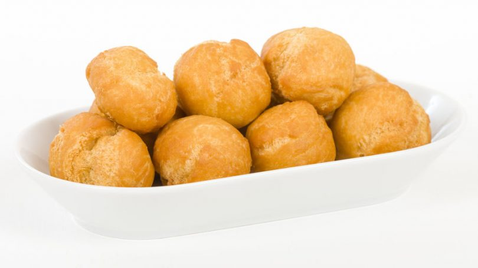

Home Page
Dame's Johnny Cakes
Jamaican Johnny Cakes

Jamaican Johnny Cakes Recipe
This is one of jamaicas most versatile side dishes, that goes great with dishes such as
jerk chicken and ackee and saltfish.
INGREDIENTS:
- 4 Cups of flour
- 2 Teaspoons of baking powder
- 1.5 Teaspoons salt
- 1/2 Cup of butter or margarine
- 1/2 Cup of cold water
- 1 Cup of vegatable oil
METHOD:
- Mix baking powder, flour and salt together in bowl, cut
the butter/margarine until the mixture forms marble sized balls.
- Heat oil in frying pan on medium-low heat.
- Break off peices and form the dough intro slighty flattened bisuits,
about 2 inches across. knead the dough for about five minutes.
- Fry the johhny cakes until they are golden.
- Remove johnny cakes and drain on paper towels to absurb the excess oil.
- Serves with dishes such as jerk chicken.